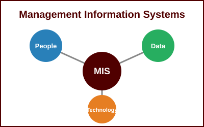

MIS & AI EthicsWebsite OverviewYasmin, Bethani, Logan, Alison, and KhushalOctober 29, 2026 Management Information Systems (MIS) and Artificial Intelligence (AI) are transforming the way organizations collect, manage, and use information. MIS focuses on integrating people, technology, and business processes to support effective decision-making. AI enhances MIS by analyzing large amounts of data, identifying patterns, and generating meaningful insights. Organizations use AI-powered MIS to automate routine tasks, improve operational efficiency, and reduce human error. Industries such as healthcare, finance, education, and retail rely on MIS and AI to improve services and gain a competitive advantage. Together, MIS and AI enable organizations to innovate, solve complex problems, and achieve their strategic goals. Management Information Systems (MIS) and Artificial Intelligence (AI) are transforming how organizations collect, manage, and use information. MIS integrates people, technology, data, and business processes to support effective decision-making. AI enhances MIS by analyzing data, recognizing patterns, and providing valuable insights. Together, these technologies automate routine tasks, improve efficiency, and reduce human error. Industries such as healthcare, finance, education, and retail rely on these technologies to improve performance and customer service. By combining MIS and AI, organizations can innovate, solve complex problems, and remain competitive in a rapidly changing digital world.
|